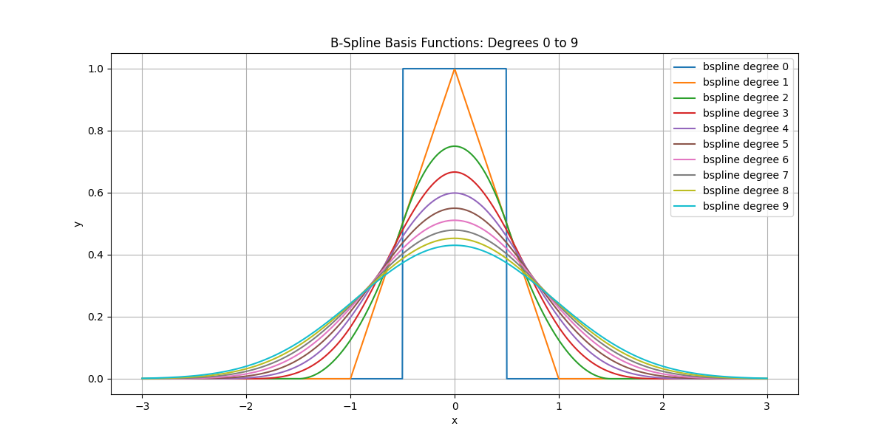
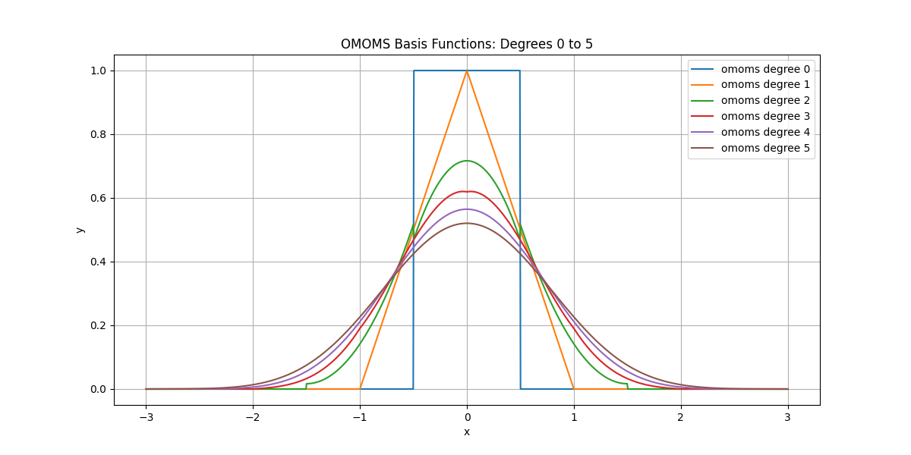
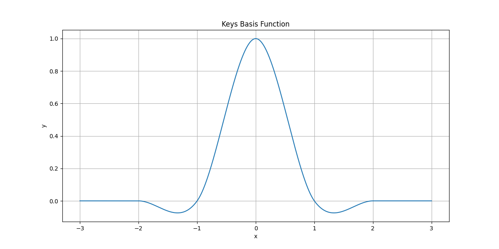

Spline Bases#
Plotting the spline bases of the library and several transformations and operations.
Imports and Utilities#
Define helper functions to visualize the spline bases and derived splines.
import numpy as np
import matplotlib.pyplot as plt
from splineops.spline_interpolation.bases.utils import create_basis
# Common x-grid for basis functions
x_values = np.linspace(-3, 3, 1000)
def plot_lines_1d(
x,
ys,
title,
labels=None,
xlabel="x",
ylabel="y",
figsize=(8, 4),
xlim=None,
ylim=None,
show_legend=False,
tight_layout=False,
):
"""Generic helper to plot one or several 1D curves."""
plt.figure(figsize=figsize)
# Accept a single array or a list/tuple
if not isinstance(ys, (list, tuple)):
ys = [ys]
for i, y in enumerate(ys):
kwargs = {}
if labels is not None and i < len(labels):
kwargs["label"] = labels[i]
plt.plot(x, y, **kwargs)
if xlim is not None:
plt.xlim(*xlim)
if ylim is not None:
plt.ylim(*ylim)
plt.grid(True)
plt.xlabel(xlabel)
plt.ylabel(ylabel)
plt.title(title)
if show_legend and labels is not None:
plt.legend()
if tight_layout:
plt.tight_layout()
plt.show()
def plot_bases(names, x_values, title, show_legend=True):
"""Plot several spline bases using the generic 1D plotting helper."""
ys = []
labels = []
for name in names:
if name == "keys":
readable_name = "Keys Spline"
else:
name_parts = name.split("-")
readable_name = f"{name_parts[0][:-1]} degree {name_parts[0][-1]}"
ys.append(create_basis(name).eval(x_values))
labels.append(readable_name)
plot_lines_1d(
x=x_values,
ys=ys,
labels=labels,
title=title,
figsize=(12, 6),
show_legend=show_legend,
)
Bases#
B-Spline Bases#
Plot B-spline basis functions for degree 0 to 9.

OMOMS Bases#
Plot OMOMS basis functions for degree 0 to 5.

Keys Basis#
Plot the Keys basis function (legend omitted, title is enough).

Transforming Cubic B-Splines#
Helper for Cubic B-Spline#
beta3_basis = create_basis("bspline3")
def beta3(x):
"""Centered cubic B-spline β(x, 3)."""
return beta3_basis.eval(x)
Single Cubic B-Spline#
Start from the centered cubic B-spline β(x, 3), which is the basic building block for the following plots.

Shifted Cubic B-Spline#
Shift the cubic B-spline horizontally by one third. This only affects the argument of β, not its shape.

Shrunk Cubic B-Spline#
Shrink the spline horizontally by 60%. This is done by scaling the argument of β, which changes the effective width of its support.

Weighted Cubic B-Spline#
Multiply the shrunk and shifted spline by a constant factor. This operation is called weighting.

Several Transformed B-Splines#
Use several combinations of (shift, shrink, weight) to obtain different functions, all of which are still cubic B-splines up to their parameters.
def beta3_shift_scale(x, shift, scale, amp=1.0):
"""Shift, scale, and weight the cubic B-spline."""
return amp * beta3((x + shift) / scale)
curves = [
("0.25 β((x - 1/3)/0.5, 3)",
lambda x: beta3_shift_scale(x, shift=-1.0/3.0, scale=0.5, amp=0.25)),
("0.8 β((x + 5/3)/1.2, 3)",
lambda x: beta3_shift_scale(x, shift=+5.0/3.0, scale=1.2, amp=0.8)),
("-0.25 β((x + 4/5)/0.2, 3)",
lambda x: beta3_shift_scale(x, shift=+4.0/5.0, scale=0.2, amp=-0.25)),
("-0.2 β((x - 1)/1, 3)",
lambda x: beta3_shift_scale(x, shift=-1.0, scale=1.0, amp=-0.2)),
]
plot_lines_1d(
x=x_values,
ys=[f(x_values) for _, f in curves],
labels=[label for label, _ in curves],
title="Four weighted & shifted cubic B-splines",
figsize=(10, 5),
xlim=(-3, 3),
ylim=(-0.2, 0.7),
show_legend=True,
)

Sum of B-Splines#
Sum these functions together to obtain a new combined function. It is built from cubic B-splines but is itself no longer a basis function.

Building Splines#
Helpers for Spline Decomposition#
These helpers are used for the uniform spline, its samples, and their decomposition into shifted and weighted cubic B-splines.
# Integer shifts k = -4, ..., 4
k_vals = np.arange(-4, 5)
# Same coefficients as in the original notebook:
coeffs = np.array([-2, -3, 4, 1, -5, -1, 2, 6, -4], dtype=float)
def spline_from_coeffs(x):
"""Uniform spline f(x) = Σ_k c[k] β³(x - k)."""
x = np.asarray(x)
y = np.zeros_like(x, dtype=float)
for k, ck in zip(k_vals, coeffs):
y += ck * beta3(x - k)
return y
def spline_term(k, x):
"""Single term c[k] β³(x - k) for integer k in [-4, 4]."""
return coeffs[k + 4] * beta3(x - k)
# Common grids for these examples
x_plot = np.linspace(-3.1, 3.1, 2000)
x_samples = np.arange(-3, 4) # integer sample positions
def spline_samples():
"""Return integer sample positions and corresponding spline values."""
return x_samples, spline_from_coeffs(x_samples)
Sum of Shifted Cubic B-Splines#
Build a regular (uniform) spline as
f(x) = Σ_k c[k] β³(x - k),
using integer shifts and fixed coefficients c[k]. The thick curve is the full spline; the thin curves are the individual terms c[k] β³(x - k).
plt.figure(figsize=(8, 4))
# Thick combined spline
plt.plot(
x_plot,
spline_from_coeffs(x_plot),
linewidth=5,
)
# Thin constituent terms c[k] β³(x - k)
for k in k_vals:
plt.plot(
x_plot,
spline_term(k, x_plot),
linewidth=2,
alpha=0.8,
)
plt.xlim(-3.1, 3.1)
plt.grid(True)
plt.xlabel("x")
plt.ylabel("y")
plt.title("Uniform spline and constituent cubic B-splines")
plt.tight_layout()
plt.show()

Sampling a Spline#
Sample the spline at integer locations x = k. These samples define a discrete sequence f[k] that we may want to reconstruct from a spline interpolant.
x_samp, y_samp = spline_samples()
plt.figure(figsize=(8, 4))
# Thick spline
plt.plot(
x_plot,
spline_from_coeffs(x_plot),
linewidth=5,
)
# Stems + markers for samples
markerline, stemlines, baseline = plt.stem(x_samp, y_samp)
plt.setp(markerline, markersize=9)
plt.setp(stemlines, linewidth=1.5)
plt.setp(baseline, linewidth=1.0)
plt.xlim(-3.1, 3.1)
plt.grid(True)
plt.xlabel("x")
plt.ylabel("y")
plt.title("Uniform spline with samples at integer positions")
plt.tight_layout()
plt.show()

From Samples to Splines#
Illustrate the relationship between:
the discrete samples f[k] (left),
the shifted and weighted basis functions c[k] β³(x - k) (middle),
and the resulting spline f(x) that interpolates the samples (right).
x_samp, y_samp = spline_samples()
fig, axes = plt.subplots(1, 3, figsize=(12, 4), sharey=True)
# Left panel: samples only
ax = axes[0]
markerline, stemlines, baseline = ax.stem(x_samp, y_samp)
plt.setp(markerline, markersize=9)
plt.setp(stemlines, linewidth=1.5)
plt.setp(baseline, linewidth=1.0)
ax.set_xlim(-3.1, 3.1)
ax.grid(True)
ax.set_xlabel("x")
ax.set_ylabel("y")
ax.set_title("Samples f[k]")
# Middle panel: basis terms + samples
ax = axes[1]
for k in k_vals:
ax.plot(
x_plot,
spline_term(k, x_plot),
linewidth=2,
alpha=0.8,
)
markerline, stemlines, baseline = ax.stem(x_samp, y_samp)
plt.setp(markerline, markersize=9)
plt.setp(stemlines, linewidth=1.5)
plt.setp(baseline, linewidth=1.0)
ax.set_xlim(-3.1, 3.1)
ax.grid(True)
ax.set_xlabel("x")
ax.set_title(r"Weighted terms $c[k]\beta^3(x-k)$")
# Right panel: full spline + terms + samples
ax = axes[2]
ax.plot(
x_plot,
spline_from_coeffs(x_plot),
linewidth=5,
)
for k in k_vals:
ax.plot(
x_plot,
spline_term(k, x_plot),
linewidth=2,
alpha=0.8,
)
markerline, stemlines, baseline = ax.stem(x_samp, y_samp)
plt.setp(markerline, markersize=9)
plt.setp(stemlines, linewidth=1.5)
plt.setp(baseline, linewidth=1.0)
ax.set_xlim(-3.1, 3.1)
ax.grid(True)
ax.set_xlabel("x")
ax.set_title("Resulting spline f(x)")
plt.tight_layout()
plt.show()
![Samples f[k], Weighted terms $c[k]\beta^3(x-k)$, Resulting spline f(x)](../../_images/sphx_glr_02_spline_bases_012.png)
Total running time of the script: (0 minutes 1.214 seconds)